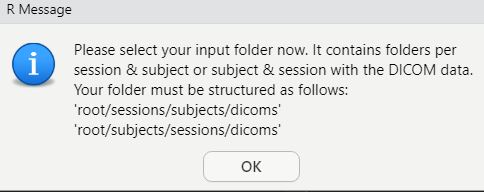
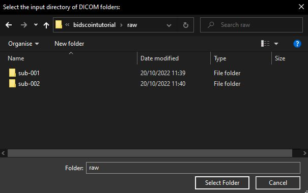
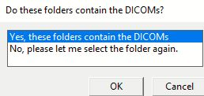
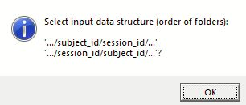
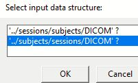
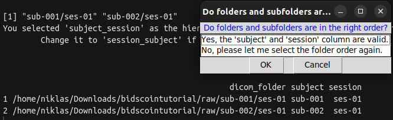
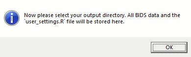
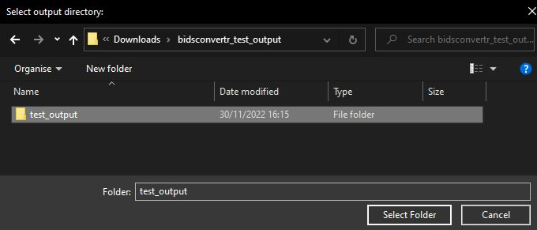

Creation of ‘user settings’ file.
Note
You entered convert_to_BIDS() and selected in the popup window that you want to create the user_settings.R file.
You have to know where your data is and should be saved to (select the according folders) and set some options based on your input data (session/subject or subject/session) folder order.
The questions from each popup window are described below in their order.
You need RStudio for popup support (user-friendly solution). Otherwise the questions will be asked inside the terminal (for the advanced user).
Choose input directories (DICOM)
Select the root folder, which contains all session/subject or subject/session folders. If you just have one session, keep your data in a folder named, say, ‘session-0’.

Please select the root directory of all DICOM images (your input folder, as described above.)

Several folders are listed in the terminal. These should include the DICOMs.
Do these folders contain the DICOM images?

Option to select |
What happens? |
|---|---|
Yes |
next step |
No |
You are able to select the folder again |
Select folder hierarchy (subject/session or session/subject)

Is your DICOM data structured as ‘session/subject’ or ‘subject/session’.

Based on this selection, the tool extracts the subject- and session-ID’s. The folders are displayed on the console.
Please note: Any subject- or session-ID is possible! Without “sub-” or “ses-” as well.
Folder order of your files |
Selection |
|---|---|
sub-0001/ses-01 |
subject/session |
ses-01/sub-0001 |
session/subject |
Choose the option that best fits your data, as displayed in the terminal.
Were subject-ID’s and session-ID’s extracted correctly?

A table with the columns “subject” and “session” is displayed on the terminal. Do they appear to be valid?
Option to select |
What happens? |
|---|---|
Yes |
Next step is started. |
No |
Change the folder order again. |
Choose output directory (BIDS)

The output directory will contain:
temporary files and metadata of the dcm2niix conversion,
‘user_settings.R’ file and
BIDS output.

You can choose any folder on your hard drive. As a result, raw data can be stored somewhere other than where processed data is.